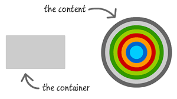

OOCSS
Object Oriented CSS
OOCSS
Se centra básicamente en la reutilización de código, la búsqueda de patrones y la abstracción de componentes, consiguiendo así hojas de estilo más eficientes, rápidas y mucho más fáciles de mantener.
EmpecemosPRINCIPIOS
Structure vs. Skin
Este primer principio abarca la division grafica entre la estructura y todo aquel atributo que le de una visualizacion a un bloque de codigo, siendo este ultimo un objecto grafico que puede ser utilizado en otros elementos, solo llamandolo con una clase dentro de la etiqueta de HTML.
Container vs. Content
Este segundo principio abarca la creacion o separacion del contenedor padre del contenido dentro y lo cual reduce la posibilidad de tener que sobreescribir o repetir propiedades. Ademas hace que el CSS sea mas manejable y facil de entender.Creacion de clases para cada etiqueta a utilizar
MEDIA OBJECT

¿Qué es un media object?
El Media Object es una imagen a la izquierda, con el contenido descriptivo de la derecha, como esta caja de comentario de Facebook
BENEFICIOS
CSS mantenible y más pequeño
Con OOCSS la idea de reutilizar código nos permite hacer cambios a las diferentes secciones en donde fueron aplicados en un sólo lugar y así añadir el contenido o cambio deseado de manera más rápida y fácil.
Reutilizable
Si aplicamos los dos principios principales de OOCSS podríamos aplicar estos estilos a los largo de la página en componentes que sean similares o con la necesidad de esos estilos.
Librerias locales
Si pensamos en reutilizar código y hacerlo de una manera más fácil podríamos pensar en crear nuestras propias librerías y de esta manera aplicar este css en distintas páginas que estemos creando.
Freebies
Algo a tener en cuenta es que si deseas añadir algún nuevo componente o reutilizas un objeto en la página y tienes todos estos estilos reutilizables solamente tendrían que ser aplicados,
RECOMENDACIONES
Evitar ID en los estilos
Estropean la especificidad porque son muy fuertes (principal razón).
Son identificadores únicos
Evitar selectores descendientes
Por qué repetimos código y los estilos que se declaran usando el selector descendiente no son reutilizables, ya que dependen de un contenedor en particular.
Uso de CSS Lint
Es una herramienta creada por Nicole Sullivan,la cual señala los problemas de tu código CSS, haciendo un chequeo básico de la sintaxis
Grids
Sistema de cuadriculas en el que se implementa el uso de divisiones del layout, controlando asi los widths